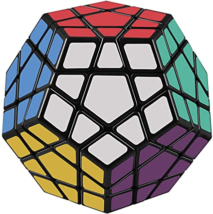

The Megaminx or Mégaminx (/ˈmɛɡəmɪŋks/, /ˈmeɪ-/) is a dodecahedron-shaped puzzle similar to the Rubik's Cube. It has a total of 50 movable pieces to rearrange, compared to the 20 movable pieces of the Rubik's Cube.  The Megaminx, or Magic Dodecahedron, was invented by several people independently and produced by several different manufacturers with slightly different designs. Uwe Mèffert eventually bought the rights to some of the patents and continues to sell it in his puzzle shop under the Megaminx moniker.[1] It is also known by the name Hungarian Supernova, invented by Dr. Cristoph Bandelow.[2] His version came out first, shortly followed by Meffert's Megaminx. The proportions of the two puzzles are slightly different.